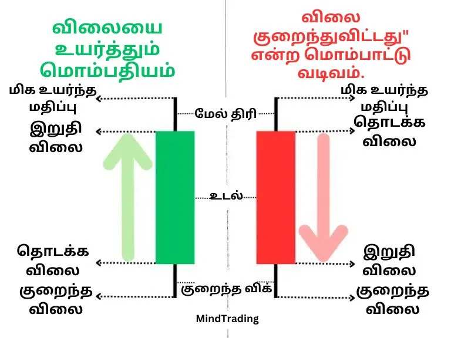
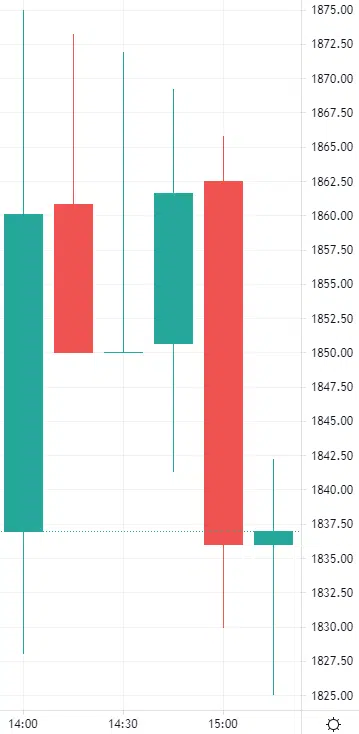

கேண்டில்ஸ்டிக் என்றால் என்ன?
ஒரு கேண்டில்ஸ்டிக் வரைபடம் எண்ணற்ற கேண்டில்ஸ்டிக்குகள் மூலம் உருவாக்கப்படுகிறது.
எந்த நேர மேலாண்மையிலும், பங்குகளின் விலையை மாற்ற,
மட்டம் அல்லது அளவு போல ஆரம்ப விலை (Opening Price), முடிவு விலை (Closing Price),
அதிகபட்ச விலை (Highest Price) மற்றும் குறைந்தபட்ச விலை (Lowest Price)
ஒரு கேண்டில்ஸ்டிக் மூலம் விளக்கப்படுகிறது.

இந்த நான்கு மட்டங்களை சரியாக விளக்க ஒவ்வொரு கேண்டில்ஸ்டிக்கும் இரண்டு பகுதிகள் உள்ளன. அதாவது,
மத்திய தடித்த உடல்:
இது மிகவும் முக்கியமான பகுதியாகும். இது ஒரு குறிப்பிட்ட கால வேளையில் திறப்பு மற்றும் மூடு விலையின் மாற்றத்தைக் காட்டுகிறது.
விலையன்றி வந்தது "புல்லிஷ் கேண்டில்ஸ்டிக்" என்றால், கீழ் முனை திறப்பு மற்றும் மேல் முனை மூடும், விலையின் குறைந்தது
"போயரிஷ் கேண்டில்ஸ்டிக்" என்றால், அது மேலே இருந்து திறந்து கீழே மூடிய விலையைக் குறிக்கும்.
'புல்லிஷ்க்' கேண்டில்ஸ்டிக் உடலின் நிறம் பொதுவாகப் பச்சை ஆகும் (அப்போது அப்போது கருப்பு அல்லது மாறுபட்டதாகும்) மற்றும் 'போயரிஷ்' கேண்டில்ஸ்டிக்
உடலின் நிறம் பொதுவாக சிவப்பு (அப்போது அப்போது வெள்ளை அல்லது வெற்றிடமாக இருக்கும்).
ஷாடோ அல்லது விக்:
உடலின் மேல் மற்றும் கீழே இருக்கும் இரண்டு ஷாடோக்கள் அல்லது விக்குகள்,
அதன் கடுமைகள் ஒரே நேர வேளையில் ஆணையாக அதிகபட்ச மற்றும் அதிகபட்ச
விலையை குறிக்கின்றன.
ஆனால், கட்டிடப்பட்ட விலை மாற்றத்தின் வகையைப் பெறுவதன் பேரில் ஷாடோக்கள்
அல்லது விக்குகள் எப்போதும் இல்லையேன்று சொல்லலாம்.
எடுத்துக்காட்டிற்க்கு:
கீழே உள்ள படம் இன்றுவரையின் தேதி (25/10/24) 15 நிமிட நேர
சூழலில் ஆதானி நிறுவனத்தின் ரண்டு முதல்
மூன்று சில்லரையிடப்பட்ட மொத்த மொழி குறிப்புகளின் படம்.

இந்த இடத்தில் முதல் மொம்பத்திரத்தைக் கணக்கில் பெற்றுக்கொள்ளும் கால அவளவு
2:00 முதல் 2:15 வரையாகும். அதாவது, அது 2:00:00 மணி மேல் உருவாக்கப்பட்டதாய் முடிகின்றது.
இன்னுமுக்குத்தொகுந்து 2:14:59 அதுவே முழுவதுமாக உருவாக்கப்பட்டு அல்லது மூடப்பட்டது.
அதன் உடல் பச்சை நிறத்தைக் குறிக்கின்றது, அதாவது, அதன் திறக்கத் துக்கம் அதன் உடலின்
கீழ் முனையைக் குறிக்கும், அதாவது, 1837 ரூபாய் மேலும் மூடும் விலையை
அதன் மேல் முனையைக் குறிக்கும், அதாவது, 1860.10 ரூபாய். அதன் கீழ்
முனையின் லேவல் 1828 ரூபாய். அதாவது, இந்த இருபதியைப்
பெற்றுக்கொள்ளாமல் விலை ஒரு முறையாவது குறைவாக உள்ளது.
அதே போல், மேல் முனையின் லேவல் 1875 ரூபாய், அது இந்த காலத்தில் உயரிய விலை
ஒரு முறை அல்லது மறுமுறையாக 1875 ரூபாயாக உயர்வுபெற்றுள்ளது என்பதை குறிக்கின்றது
இந்த படத்தின் முதல் காந்தில் ஸ்டிக் 1860.10 இல் மூடியிருக்கும் பிறகு, 2:15
இல் 1860.80 அளவில் இரண்டாம் காந்தில் ஸ்டிக் உருவாகின்றது. அதன் நிறம் சிவப்புதான்,
ஏனெனில் அந்த நிற ஓப்பெனிங் முலம் மூடும் விலையை 1850.10 ரூபைக்கு குறைந்து உள்ளது.
இன்னுமொரு பிரிவின் பிரிவின் கீழ் எந்த வீக்கும் இல்லை. இதன் காரணம் இங்கு
மூடிய விலை மற்றும் கீழ் அளவிலான மிக குறைந்த விலை ஒன்று அது.
மூன்றாவது காந்தில் ஸ்டிகில் எந்த உடலும் இல்லை. இந்த பிரிவின் காரணம் இங்கு ஓப்பெனிங்
முலம் மற்றும் மூடும் விலை ஒன்று அது.।
படத்தின் மீதன விளக்கங்கள் ஏதுமில்லை, ஏனெனில் நம்பிக்கை பெறுவோம் அது எப்போதும் புனிதமாக இருக்கின்றது.